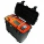

“АЭМП-14”
| Наименование | Версия | Дата релиза | Скачать |
|---|---|---|---|
| QZond | 4.2 | 01.07.2019 | |
| iiSystem | 4.04 | 01.07.2019 | |
| EmsControl | Pro | 23.08.2011 | |
| EmsControl | WM6 | 23.08.2011 | |
| EmsControl | WEH | 21.12.2012 | |
| EmsControl | VGA WM6.5.3 | 02.2014 | |
| EmsControl | WVGA WM6.5.3 | 02.2014 |
EmsControl – разработана для Windows Mobile совместимых устройств (КПК, коммуникаторы, смартфоны и пр.) и предназначена для сбора данных с использованием аппаратуры АЭМП-14, обеспечивает первичную визуализацию данных в виде карт, разрезов и кривых распределения сигнала, имеет простой и удобный интерфейс, позволяет использовать Bluetooth, встроенные и встраиваемые (Compact Flash) приемники GPS.
“Скала-48/64”
| Наименование | Версия | Дата релиза | Скачать |
|---|---|---|---|
| SibER Tools (Скала-48) | 1.0 | 01.03.2013 |  |
| «RiPPP» программное обеспечение для предварительной обработки данных | 1.31 | 26.10.2017 |
SibER Tools – предназначена для создания и редактирования файлов с описанием установок, а также первичной обработки данных – фильтрации, компоновки и экспорта в распространённые форматы (IPI2Win, Res2dInv, Res3dInv). Программа позволяет создавать шаблоны измерений как для электротомографии, так и для традиционных четырёх-электродных зондирований с линейным или геометрическим шагом по разносам.
«RiPPP» предназначена для предварительной обработки данных УЭС/ВП, полученных методом электрической томографии. ПО «RiPPP» позволяет просматривать, компоновать, выполнять фильтрацию данных и экспортировать результаты предварительной обработки в другие форматы.
.